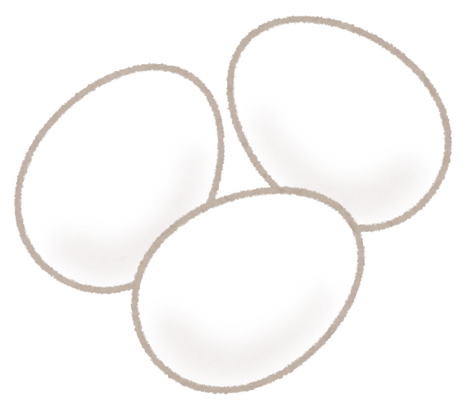
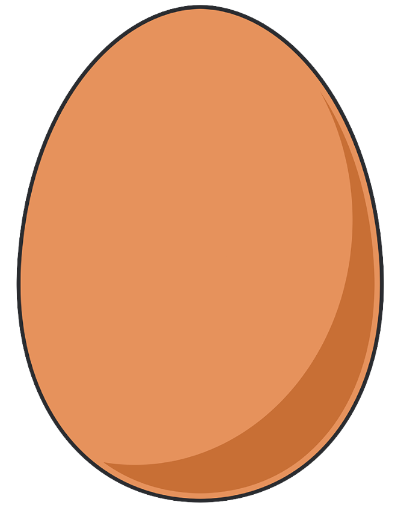
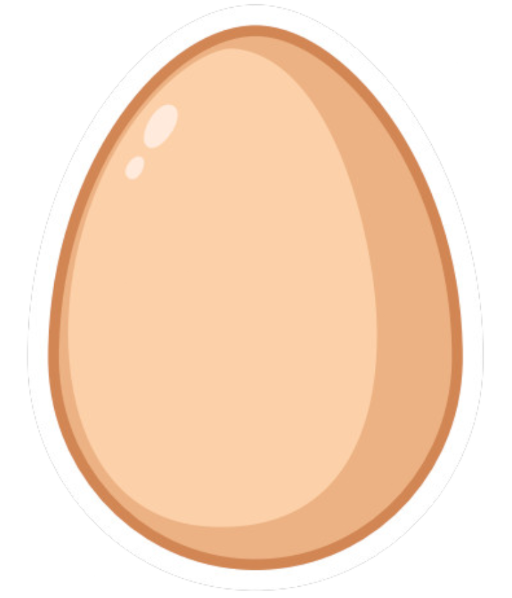
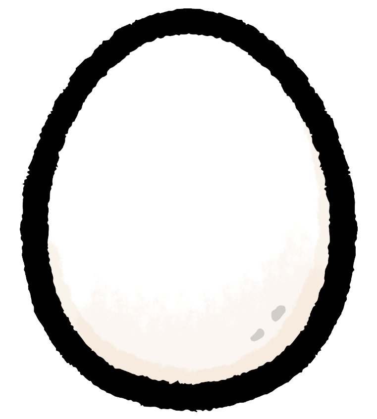
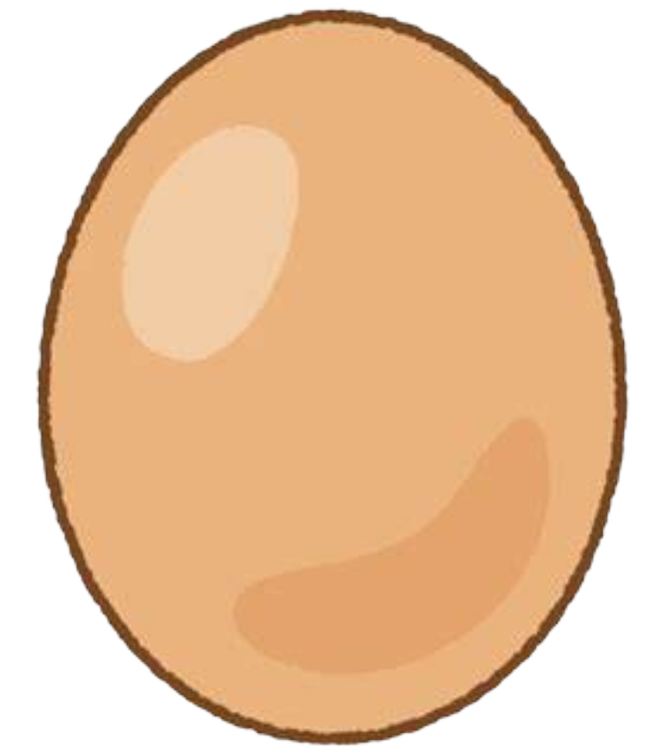
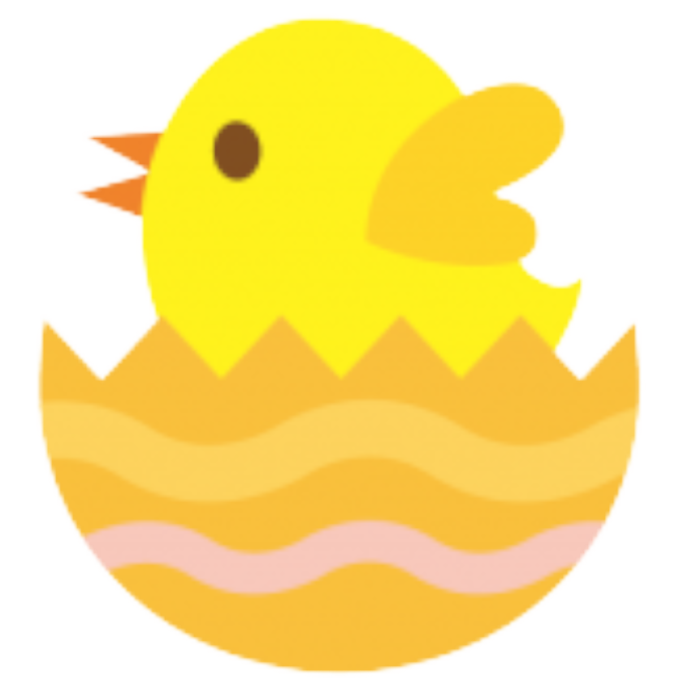
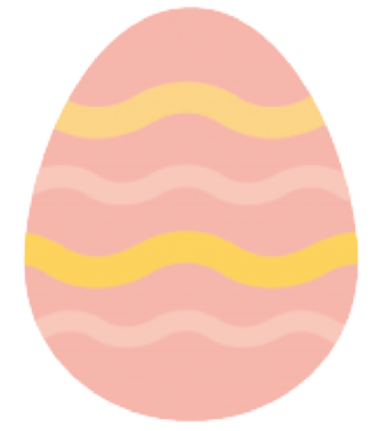
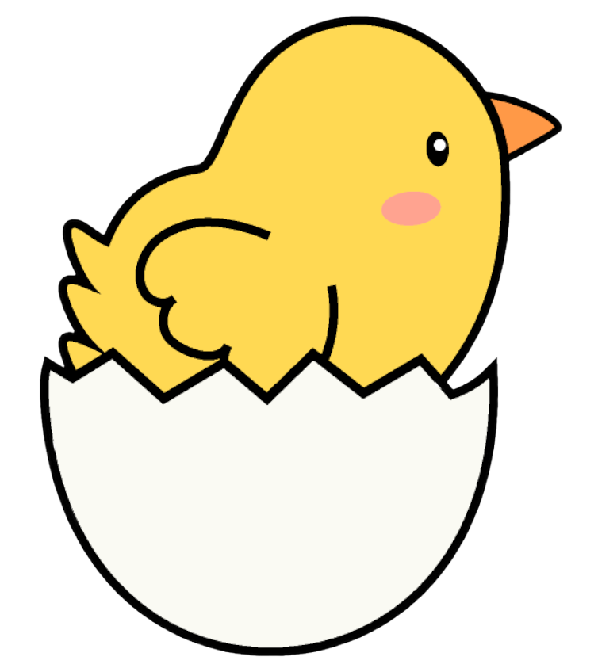

         
サステナビリティについて調べてみました②
ESG投資
投資家が長期にわたって安定した収益を獲得するためには、
投資先の個々の企業の価値が長期的に高まり、
資本市場全体が持続的・安定的に成長することが重要。
資本市場は長期で見ると環境問題や社会問題の影響から逃れられないので、
こうした問題が資本市場に与える影響を減らすことが不可欠。
また、外国への投資が増加し、世界情勢や環境問題がリスクとして捉えられるようになった。